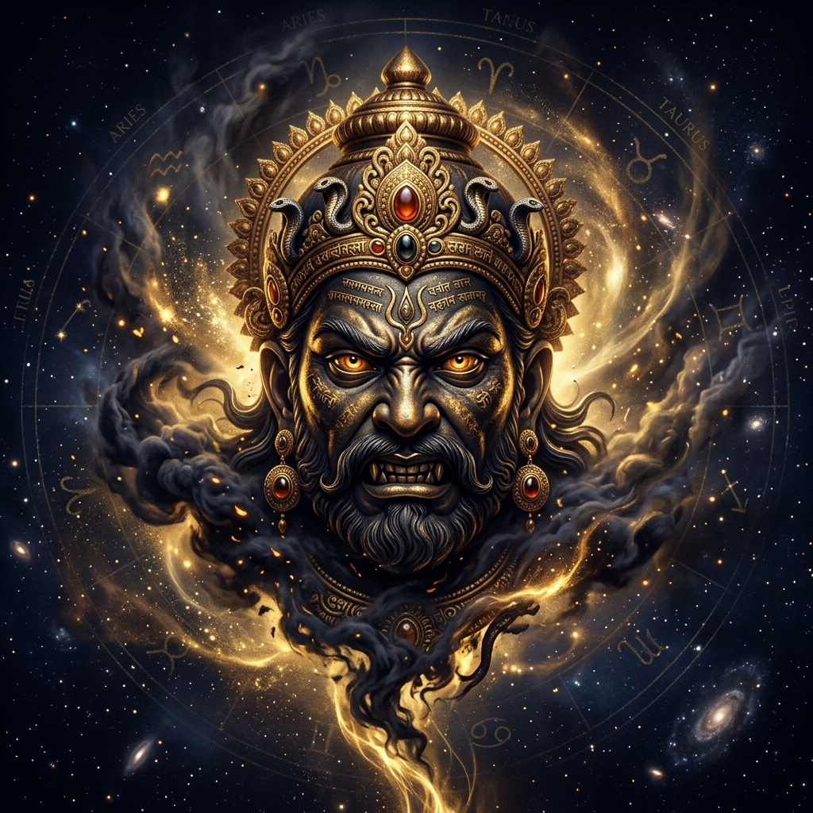
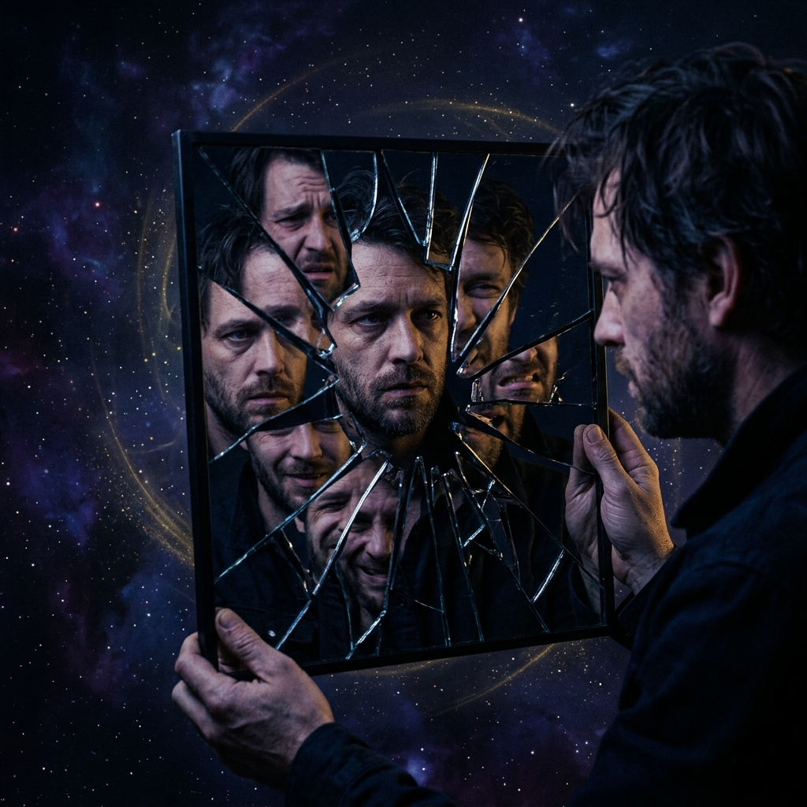
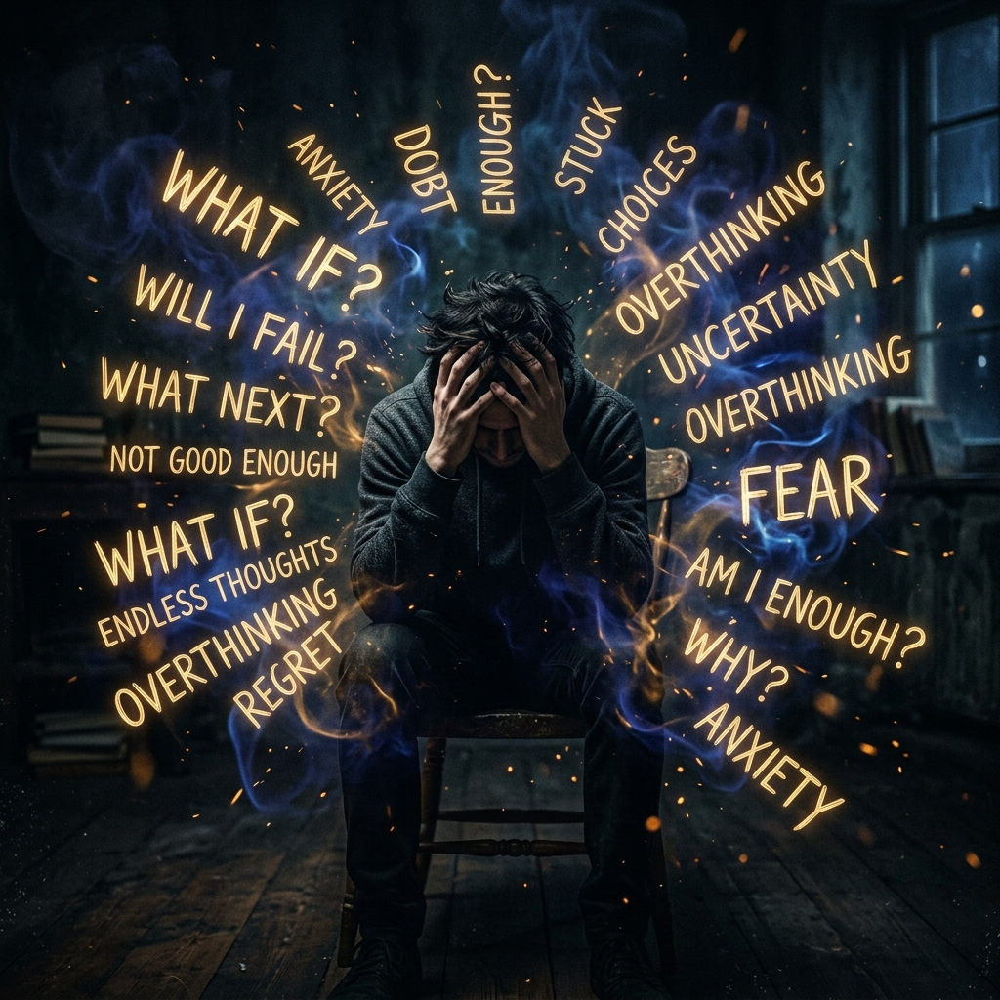
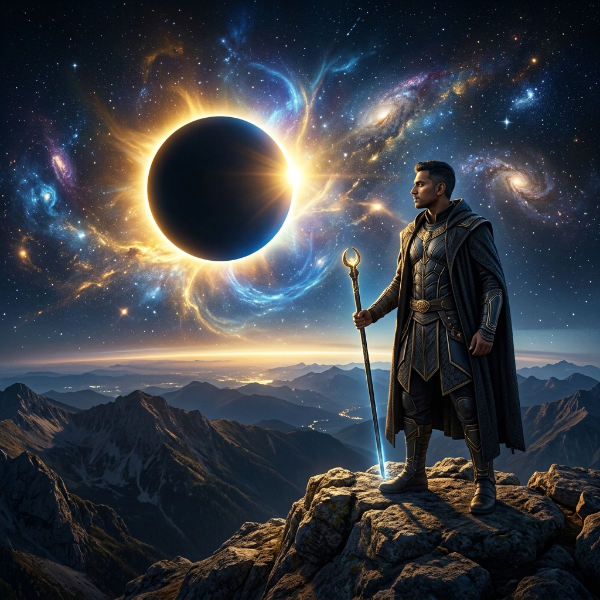

Quick Answer
Rahu creates obsession when desire becomes psychologically unfinished. In Vedic astrology, its influence often shows where the mind magnifies longing, identity hunger, fantasy, ambition, stress, and attachment until awareness develops.
Key Takeaways
- Rahu does not simply create desire; it creates desire that feels incomplete.
- Strong Rahu influence can magnify attraction, ambition, validation, and uncertainty.
- The evolved use of Rahu is conscious desire, innovation, and strategic originality rather than compulsive attachment.
Most people describe Rahu very superficially.
They usually say:
- Rahu creates obsession
- Rahu creates illusion
- Rahu creates desire
- Rahu creates confusion
These descriptions are not wrong, but they are incomplete. They do not explain how Rahu actually operates inside the human mind.
Every human being has desires. Every human being experiences attraction, ambition, fantasy, curiosity, and emotional longing. Rahu becomes psychologically significant when desire stops functioning normally and starts consuming emotional stability.
That is the real difference: under strong Rahu influence, the mind does not simply want something. The mind becomes attached to the psychological experience of wanting it.
The Core Pattern
Rahu often produces:
- compulsive thinking
- emotional fixation
- endless anticipation
- addictive attachment
- fantasy projection
- inability to disengage mentally
The person may fully understand logically that they are overthinking, emotionally exaggerating, or becoming too attached and still remain unable to stop. That helplessness is one of Rahu's clearest psychological signatures.
Rahu does not only intensify desire. It makes desire feel unfinished.
The Symbolism of Rahu

The mythology of Rahu explains its psychology better than most modern interpretations.
Rahu was the serpent who secretly sat among the devas to consume Amrit, the nectar of immortality. Before the nectar fully passed through his body, Vishnu severed his head. As a result, Rahu became immortal but permanently incomplete.
This symbolism is extremely important. Rahu is:
- appetite without satisfaction
- consumption without fulfillment
- craving without completion
- psychological hunger without emotional digestion
The severed head symbolism matters because Rahu operates primarily through perception, imagination, mental fixation, anticipation, and psychological projection. Rahu has a mouth that consumes endlessly, but no body capable of processing experience into peace.
This is why strong Rahu placements often produce people who constantly feel internally restless, mentally overstimulated, emotionally unresolved, and psychologically unfinished. Even after major achievements, the mind keeps moving toward the next object of attachment.
How Rahu Magnifies the Mind
One of Rahu’s most dangerous qualities is distortion of proportion. Rahu magnifies emotional significance. Things stop appearing in their actual size psychologically. A small emotional event becomes internally enormous.
This is why strong Rahu people frequently experience emotional intensity disproportionate to external reality. For example:
- delayed replies may feel emotionally threatening
- uncertainty may become unbearable
- attraction may become obsession
- ambition may become emotional survival
- criticism may become humiliation
- success may temporarily feel euphoric
Rahu enlarges internal reactions. This is why many Rahu-dominant individuals struggle with emotional neutrality. The nervous system remains over-engaged with whatever Rahu has attached itself to.
Why Rahu Creates Obsessive Thinking
Obsessive thinking is not simply “thinking too much.” It is the inability of the mind to release emotional attachment from a thought pattern. Rahu strengthens this attachment.
The mind repeatedly returns to conversations, fantasies, future outcomes, fears, possibilities, and imagined scenarios. This happens because Rahu creates unfinished psychological tension.
The native unconsciously believes: “If I think about this enough, I will gain emotional control over it.”
But Rahu rarely provides closure through thinking. Instead, the mind becomes trapped in loops. Especially when Rahu influences the Moon, Mercury, Lagna, 4th house, or 8th house, the person may experience:
- mental replaying
- compulsive analysis
- emotional overprocessing
- future fixation
- catastrophic imagination
- inability to mentally switch off
This creates nervous system exhaustion over time. The problem is not lack of intelligence; in fact, many strong Rahu natives are highly intelligent. The problem is emotional disengagement.
Emotional Dependency and External Validation
Strong Rahu often creates unconscious emotional dependency on external conditions. The native may psychologically depend on validation, attention, recognition, achievement, relationship intensity, or future success.
This dependency becomes dangerous because emotional stability starts depending on unstable external realities.
- praise creates emotional highs
- rejection creates emotional collapse
- uncertainty creates stress
- attention creates temporary relief
- silence creates psychological discomfort
This is why Rahu people often struggle with emotional regulation. Their inner state becomes heavily influenced by external movement.
Identity Instability

One of Rahu’s deepest wounds is fear of insufficiency. Strong Rahu individuals frequently feel: “Who I currently am is not enough.”
This creates continuous self-reinvention. The native may become obsessed with status, appearance, intelligence, influence, or spiritual uniqueness. Especially when Rahu influences the Lagna, Sun, 10th house, or 11th house, the person may build identity around external achievement.
But internally there is often instability. The native unconsciously hopes: “If I become important enough, I will finally feel internally complete.”
However, Rahu rarely allows lasting satisfaction. The achievement temporarily stimulates the mind but does not permanently stabilize self-worth.
Relationships: Fantasy Before Clarity
Rahu dramatically intensifies emotional attachment in relationships. Especially when connected with Venus, Moon, 7th house, Scorpio, Libra, or 5th house, Rahu often creates relationships that feel consuming, karmic, psychologically overwhelming, and addictive.
Rahu frequently creates projection before clarity. The native does not initially see the other person realistically. Instead, Rahu amplifies fantasy and psychological intensity.
The person may think:
- "I cannot stop thinking about them."
- "This connection feels destined."
- "I have never felt this way before."
But often, the native becomes attached to the emotional experience itself rather than the actual person. Rahu is highly stimulated by uncertainty and longing. This is why emotionally unstable relationships often become harder for Rahu-dominant individuals to leave.
Rahu and Restless Anticipation

Rahu accelerates mental anticipation. The mind constantly scans future possibilities, hidden threats, and emotional risks. This creates chronic psychological tension.
Especially with Moon or Mercury involvement, Rahu may produce overthinking, insomnia, and nervous system overstimulation. The native struggles remaining present because the mind keeps moving ahead of reality. Rahu attempts to psychologically control uncertainty through excessive mental activity, but this usually increases stress instead of reducing it.
Rahu and Stimulation Loops
Rahu’s connection with repetitive desire is deeper than substances alone. Rahu can create a loop around stimulation itself. This may manifest through emotional drama, social media, romantic intensity, work, power, or risk-taking.
The common pattern is psychological overstimulation. Rahu struggles with stillness. Silence becomes uncomfortable because it removes distraction and exposes unresolved inner emptiness.
Rahu and Spirituality
Rahu initially approaches spirituality through fascination and consumption. This may create:
- obsession with enlightenment
- spiritual ego
- guru fixation
- mystical fantasy
- superiority complex
Rahu turns spirituality into another object of psychological hunger. Only later, after repeated disillusionment, does deeper transformation begin. Eventually, the native realizes: “No external identity — even spiritual identity — can permanently remove internal emptiness.”
Rahu Mahadasha
Rahu Mahadasha often feels psychologically overwhelming because Rahu expands desire faster than emotional grounding. Externally, many people become highly successful during Rahu Mahadasha. Internally, however, emotional peace may weaken.
The native often experiences identity transformation, obsessive relationships, migration, and sudden social rise. Rahu Mahadasha forces confrontation with the nature of desire itself.
The Evolution of Rahu

Unevolved Rahu seeks endless stimulation. Evolved Rahu develops awareness around desire.
Healthy Rahu individuals stop depending emotionally on external outcomes for inner stability. Once awareness develops, Rahu’s immense energy becomes constructive, creating originality, innovation, strategic brilliance, and transformational depth.
Evolved Rahu is not desirelessness. It is conscious desire. It is the ability to want deeply without becoming psychologically possessed by wanting.
Applied Takeaways
- Appetite without Satisfaction: Rahu represents consumption without fulfillment.
- Psychological Magnification: It enlarges emotional significance, leading to obsession.
- Nervous System Tension: Constant anticipation creates chronic stress.
- The Path to Wisdom: Moving from external stimulation to internal awareness.
FAQ: Understanding Rahu's Obsession
Why does Rahu create repetitive desire patterns?
Rahu symbolizes the severed head of a serpent—a mouth that consumes but has no stomach to digest. Psychologically, this translates to seeking external stimulation that never leads to lasting satisfaction, creating a loop of repetitive behavior.
How can I tell if Rahu is influencing my thoughts?
The clearest signature of Rahu is "helplessness" in the face of overthinking. If you logically understand you are overthinking but feel emotionally unable to stop, that is the magnifying power of Rahu.
Can Rahu's energy be used positively?
Yes. Once the individual develops awareness around their desires, Rahu’s immense energy can be channeled into innovation, strategic depth, and radical originality.
The Connection to Karma
While Rahu represents our future obsessions and cravings, it is often balanced by the restrictive lessons of Saturn. While Rahu says "more," Saturn says "enough." To understand how these two forces interact to create emotional boundaries, read our deep dive on Why Saturn Creates Emotional Isolation.
Final Thoughts
Rahu represents the human tendency to search externally for permanent internal completion. It eventually reveals a painful truth: External intensity cannot permanently resolve internal incompleteness.
That realization becomes the beginning of wisdom. Eventually, the native stops asking "How do I get more?" and begins asking "Why does nothing feel enough for long?"
Common Questions
Why does Rahu create obsession?
Rahu symbolizes appetite without lasting satisfaction, so the mind can keep returning to the same desire, fantasy, fear, or ambition even when logic understands the loop.
Is Rahu always negative?
No. Rahu becomes difficult when it is unconscious. When handled with awareness, it can support originality, social rise, unconventional intelligence, research, and bold transformation.
Which placements make Rahu more psychological?
Rahu with the Moon, Mercury, Venus, Lagna, 4th house, 7th house, 8th house, or 10th house often makes its effects more visible in thoughts, relationships, identity, and public ambition.